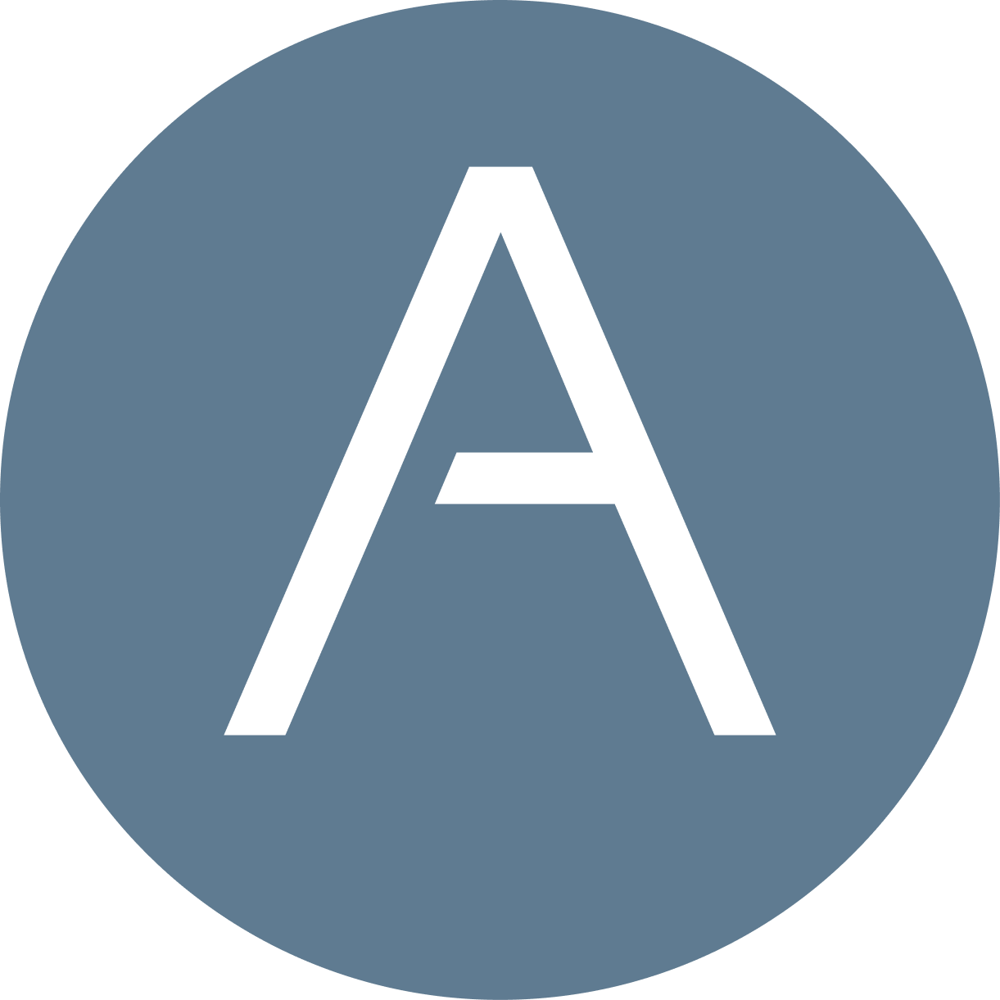

Modernizing service operations without losing the workflows that make Altourage fast.
A buyer-facing summary of what Rev.io heard from Matthew’s discovery call: ConnectWise replacement planning, Halo comparison points, workflow-delay pain, integration requirements, and the specific items Rev.io must validate for a Q4 decision.
An MSP operating in a service-heavy, relationship-driven market.
Business profile
Altourage is a New York City-headquartered managed services provider serving clients across financial services, law firms, professional organizations, and nonprofits.
Operating model
The support team is currently running ConnectWise Manage, with 75 users effectively needing full standard PSA access and a cleaner day-to-day workflow model.
Portfolio context
Altourage is part of the broader Lyra operating company ecosystem. Lyra Communications already uses Rev.io billing, and other Lyra opcos are evaluating Rev.io PSA.
Source basis: Altourage website positioning plus the July 13 discovery call.
The migration window is already open — and the wrong PSA decision creates 9–12 months of drag.
Halo evaluation is already advanced
Altourage has completed multiple Halo demos, held migration-vendor calls, and is cleaning data now so the team can move when a platform is selected.
ConnectWise renewal pressure
The team is renewing ConnectWise in the near term at negotiated pricing. That creates a practical decision window before committing deeper to the current state.
ConnectWise workflow delay
The demo surfaced a recurring 10–15 minute workflow delay in ConnectWise that creates avoidable drag for service operations.
Decision timing is clear
Altourage expects a firm PSA decision in Q4, with migration beginning in Q1.
Altourage is not buying “new PSA.” They are protecting core service speed while consolidating the stack.
Workflow setup is too slow
Altourage called out a 10–15 minute ConnectWise workflow delay; Rev.io needs to show faster workflow creation and cleaner automation management.
ConnectWise is embedded but painful
They know ConnectWise deeply after years on the platform and consultant-led cleanup, but the team is actively looking for a cleaner operating model.
Demo bar is high
Matthew and Allison know the ConnectWise pitfalls and expect several detailed demos, so Rev.io has to answer operational questions with specificity.
Every integration must earn its place
Altourage wants a PSA that either replaces tools cleanly or integrates well with the existing stack: NinjaOne, Quoter, BrightGauge, HUDU/IT Glue, EDR/MDR, scheduling, and communications workflows.
The business case is stack consolidation plus migration confidence — not AI for AI’s sake.
Reduce tool sprawl
Rev.io can potentially replace or reduce dependency on separate quoting/e-signature, dashboarding, documentation touchpoints, and workflow automation tools.
Lower migration friction
Rev.io’s onboarding model includes a dedicated onboarding consultant, data migration engineer, and solutions analyst — reducing the need to outsource migration help.
Remove workflow friction
Rev.io can show how workflow building, ticket creation, and automation updates happen faster than the current ConnectWise process.
Replace point tools selectively
The demo should make clear where Rev.io can replace Quoter, BrightGauge, and workflow/admin effort without forcing extra integrations.
Impact estimates are directional assumptions from discovery and demo inputs; exact ROI should be firmed up with tool costs, migration staffing plans, current-state process friction, and final integration scope.
What Rev.io must validate before Altourage can put us on the Q4 shortlist.
Decision criteria to validate
- Migration plan, timeline, and data ownership
- Workflow automation speed vs. current 10–15 minute ConnectWise delay
- Integration map for systems that stay alongside the PSA
Confirmed Rev.io fit areas
- Email-to-ticket, customer portal, SMS replies
- NinjaOne asset sync and ticket alerts
- HUDU and IT Glue integrations
- Full mobile PSA access beyond a tech-only companion app
Evaluate for replacement
- Quoter by ScalePad vs. Rev.io quoting + PandaDoc
- BrightGauge vs. Rev.io analytics and Revii querying
- Migration vendor need vs. Rev.io onboarding model
Open stack inputs
Matthew will send the full integration stack list after confirming with Allison, finance/HR director. Rev.io should map each system as replace, integrate, or remain alongside.
Commercial requirement
Rev.io should keep the commercial path simple, transparent, and easy for Altourage to compare against the alternative PSA option.
Keep Rev.io in the evaluation by turning demo pain points into documented answers.
1. Integration confirmation
Matthew sends the full stack list. Jamie maps current ConnectWise dependencies, demo pain points, and what must replace, integrate, or remain alongside.
2. Product fit proof
Rev.io shows the exact workflow path, including how Revii builds automations and how the team avoids the 10–15 minute delay they see in ConnectWise.
3. Full PSA demo
Schedule a full Rev.io PSA demo later in Q3 with Allison and the additional 4–5 stakeholders typically involved in Altourage’s process.
4. Commercial path
Bring a clean commercial structure back to Matthew as part of the evaluation package.
Recommended focus: show Altourage exactly how Rev.io compares against Halo, how migration from ConnectWise works, and what the Q1 path would look like if Rev.io is selected.